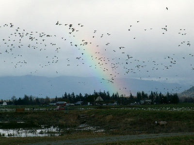
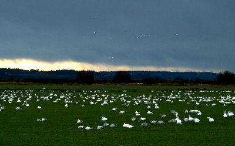

Over the New Years weekend, the B and B team travelled to the exotic locale—by Texas standards—of Seattle, Washington to visit a good friend. For one of us, it was the first visit ever to the Pacific Northwest, and for the other (me), it was the second visit, and the first in over seventeen years.
Seattle in the middle of winter may not be many people's idea of a vacation destination. Its reputation for persistent clouds and rain is definitely deserved, if our four day visit was any indication. Yet, as we discovered via some hurried internet research before our trip, the Puget Sound region in winter is a tremendous area for watching birds. The Skagit River valley, about an hour north of town, particularly caught our attention, especially since it appears to be a hotspot for Bald Eagles at this time of year—and Bald Eagles are one of my very few 'must see' species that I had never before seen.
So our sightseeing agenda was set. Birding it would be, and Skagit River valley birding if at all possible. We fully anticipated seeing lots of brand new birds for us. The only problem would be figuring out what they were.
On our first full day, we stayed close to our base in southern Snohomish County, several miles north of Seattle proper. Taking the recommendations of an internet site I found the day before we left, we hit a marsh along the Puget Sound coast in the heart of the town of Edmonds, followed by a 300-plus-acre wildlife refuge along the Snohomish River a few miles inland.
The next day, the first of 2006, dawned pleasant, which means it was cloudy and chilly, but not raining. We headed out late morning and set our sights north, on the Skagit River valley. Using the same list of recommendations, we decided to try out the Hayton Reserve in the Skagit Wildlife Area, in the river's delta, near the shores of Puget Sound. Our website reference contained a brief description of the area, how to get there, and what species are typically seen, but other than that, we had little idea what to expect.
So it was quite dramatic for us, as we approached the location of the refuge, to see huge flocks swarming in the distance, low off the ground. As we pulled up, we realized the flocks were even bigger than we had suspected, as most of the birds, white and off-white waterfowl, were staying on the ground. We half expected swans of some kind, which we had not seen the previous day but had heard were prevalent, but these were clearly snow geese—thousands and thousands of snow geese.
We parked in the refuge's modest dirt lot and got out of the car, into a brutal, gusty, cold wind and a cacophony of cackling geese. The hordes of birds were just across a fence in a flat, marshy expanse. In the background, the Cascade foothills rose up into the clouds.
After watching and listening to the geese's show for a few minutes, we decided to head up a small trail at the other end of the parking lot, away from the huge flock, but towards the shore. We didn't know what was out there, but we figured we'd probably see something cool.
After a short distance, alongside an tiny inlet of Puget Sound, the trail ended at a fence with a "No entry beyond this point" sign. We saw small flocks of shorebirds and some other isolated birds zipping around but were unable to even try to identify them. We also saw a raptor flying low along the shoreline, apparently harassing more distant flocks of shorebirds, but were also not able to identify it due to a combination of our lack of raptor knowledge, bad lighting, and trying to hold binoculars steady with frozen hands in the brutal wind. (In retrospect, based on our later raptor sightings in the area and on the single field mark I saw—I think it may have been a Northern Harrier.)
So we resigned ourselves to enjoying the scenery with our hands in our pockets, with our attention occasionally being drawn back to the snow goose flock erupting in dramatic chatter as large numbers took flight at once. Not far away, the sound of occasional hunter's gunfire broke through the wind.
After a few minutes, a pair of birders joined us at the end of the trail, spotting scope in hand. One asked me, "Have you seen the Snowy Owl?" All I could offer was a blank look and a confused shrug. I didn't recall Snowy Owl being on the list of birds we could expect to see, and of course had certainly not spotted one on my own. Apparently a friend of theirs had recently seen one near this very spot. Cool, I thought—never seen one of those before. But the thought of attempting to find it ourselves in the conditions—equipped with mere 8x42 binoculars and no scope—did not even occur to us. I did pull my hands out of my pockets long enough to make a few scans of the driftwood-covered landscape between us and the shore, though.
 Soon, a couple more pairs of birders, with their own scopes, joined us. They all commenced their search for the Snowy Owl. Amazingly, after about ten minutes, they actually found one, hunkered down quietly on a prominent log roughly 200 feet away from us in the direction of the shoreline. Once I knew where it was, I was surprised we hadn't all found it sooner, as its color and location did not exactly make it invisible. But it was not moving and the jumble of debris between us and the water was a complicated visual scene.
Soon, a couple more pairs of birders, with their own scopes, joined us. They all commenced their search for the Snowy Owl. Amazingly, after about ten minutes, they actually found one, hunkered down quietly on a prominent log roughly 200 feet away from us in the direction of the shoreline. Once I knew where it was, I was surprised we hadn't all found it sooner, as its color and location did not exactly make it invisible. But it was not moving and the jumble of debris between us and the water was a complicated visual scene.
One of our fellow birders was kind enough to allow us prolonged views through his high-quality scope, so we got premium views of this beautiful creature. Its head was bright white, and it rotated it around from side to side, inspecting its environs. The rest of it was much more mottled black and white, so this was apparently either a female or an immature owl. During one of her looks through the scope, the other member of the B and B team noted that this owl had a fuzzy furball of some kind right next to him, apparently a dead creature waiting to be consumed.
As can be gathered by the attention this bird received from a group of well-equipped birders, Snowy Owls in Washington state are not an everyday occurrence. As I have since learned, Snowy Owls are normally denizens of the Arctic tundra, where they breed far, far north of Puget Sound. In winter, they disperse and move south, but generally not as far south as the Seattle area. This year, for the first time in nine years, is different.
Snowy owls are being spotted throughout the region, apparently making one of their rare migrations south.So we were lucky in many ways to be able to see a Snowy Owl. In particular, we were fortunate to run into the group of informed birders, without whom it seems extremely unlikely we would have been able to take advantage of this luck of timing and spot this majestic white fowl....
It's uncommon for snowy owls to migrate this far south in the winter, but every few years, [raptor keeper for the Woodland Park Zoo, Gretchen] Albrecht said, the lemming population in northern Alaska dips and the raptors head south in search of food.
"In those years you get owls in odd places," Albrecht said. "This is pretty far south, the far end of their winter movement."
...
Denver Holt, a snowy owl researcher who divides his time between Charlo, Mont., and Barrow, Alaska, said he's received reports of owl sightings this year from the Great Lakes, the Pacific Northwest and Montana.
If you live in the northern part of this country, you too may be able to spot a Snowy Owl this winter.
As to whether we found any Bald Eagles or not—that story will have to wait for another installment.

{kind=link}
{kind=link}
Recent Comments